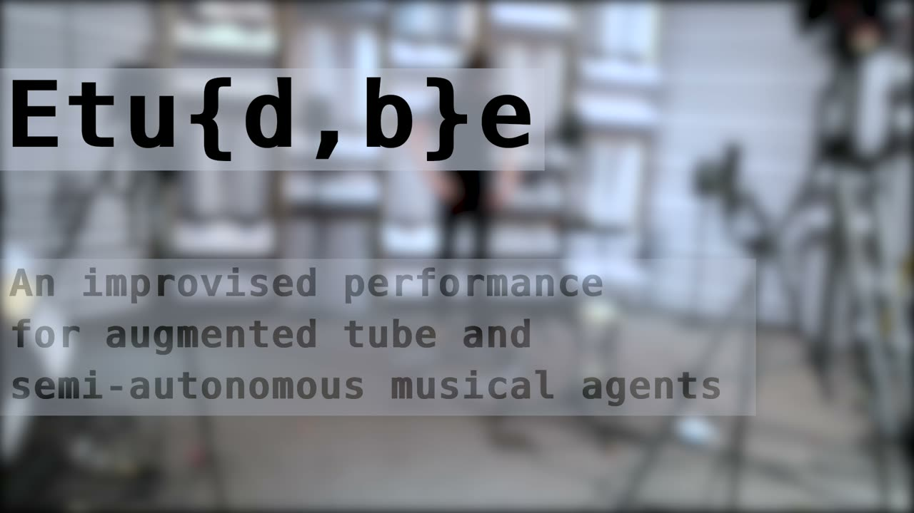
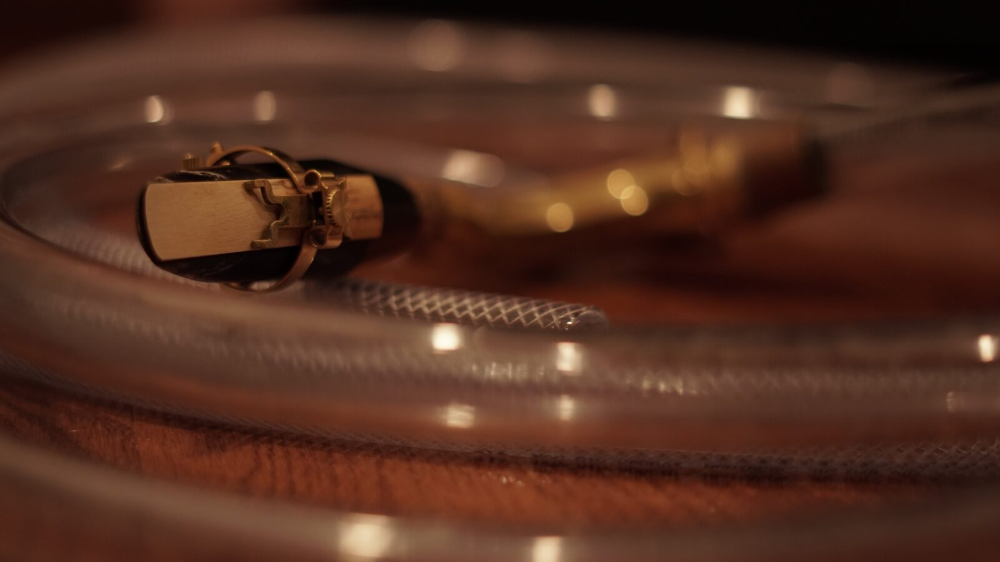
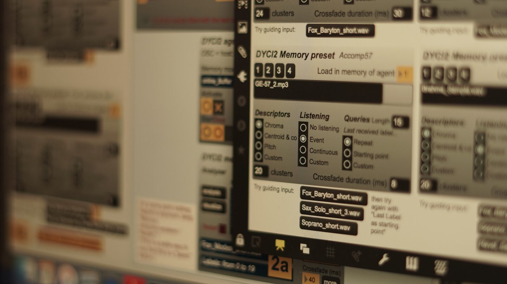
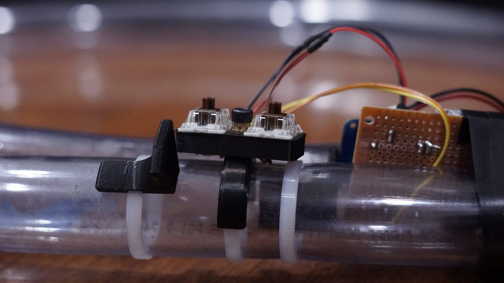
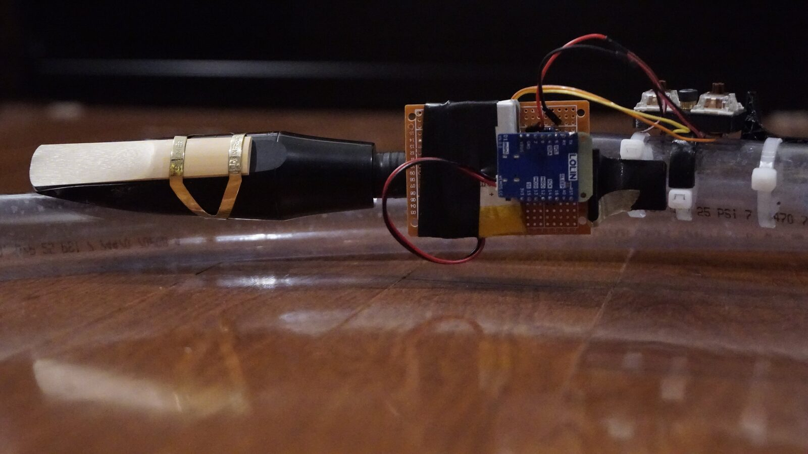
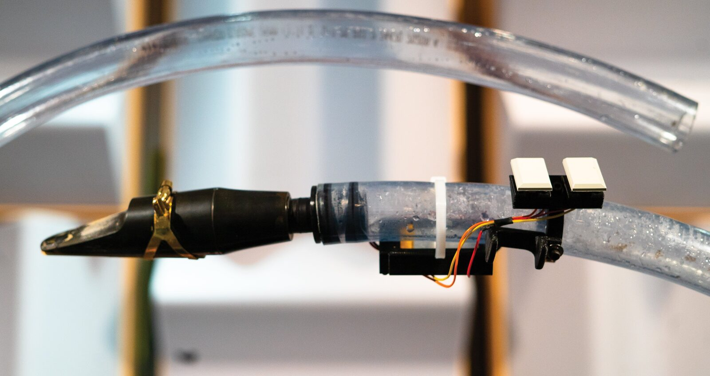

Etu{d,b}e: A Preliminary Conduit
Project Description
Etu{d,b}e is a series of performances including semi-autonomous musical agents improvising with a live musician performing on the eTube, an augmented instrument using a saxophone mouthpiece and custom controller interface.
This instrument's playing techniques are influenced by contemporary saxophone performance. However, the conical saxophone is replaced with a keyless cylindrical tube, presenting a limited, yet interesting sound world to be explored primarily through timbre, texture, overtones, and articulations rather than pitch. Custom electronics based on the ESP32 chip are interfacing the sensors and actuators to relay information between the musician and the computer wirelessly. The instrumentalist’s preferences regarding some inherent qualities of sensors and the topology of the 3D printed controller were at the heart of the design process. The controller is attached to the acoustic instrument without obstructing regular playing technique.
The performance evolves around the classical music notion of “étude” through machine listening, human-computer interaction, and a unique sound world created with the acoustic tube and various saxophones. Each étude explores a specific sound palette which is preloaded into the Creative Dynamics of Improvised Interaction (DYCI2) memory. This framework, designed by Jérôme Nika at IRCAM, enables the eTube’s wireless controllers to interact with musical memories and patch settings during real-time performance. We have customized certain functions of the agents to react to specific sound materials for each étude. Live microphone input from the eTube enables the electronics to react to performed musical phrases in real time, while the controller interface enables the improviser to interact with the electronics during performances.
Type of submission
Option 1: “New NIME” - traditional NIME music sessions aimed at showcasing pieces performed or composed with new interfaces for musical expression.
Program Notes
Etu{d,b}e simultaneously refers to the name of the eTube, an augmented instrument, and to a series of improvised études based on human-computer musical interactions.
Performing on a flexible PVC tube fitted with a saxophone mouthpiece fulfilled an interest in exploring a noise-based wind instrument with intentionally limited pitch control while investigating contemporary saxophone techniques and performance gestures in an improvised context. This “infra-instrument” has no keys or holes for changing pitch and has been augmented with sensors creating a new channel of communication between the musician and their digital counterpart.
During a performance, semi-autonomous computerized musical agents react in realtime to the ongoing musical material via machine listening and analysis functions. The agent’s memory consists of tube and saxophone recordings exploring techniques such as slap tongue, flutter tongue, growling, multiphonics, and extensive circular breathing. Although the agents augment the limited sound space of the eTube, they also assert their own behaviour which creates an evolving connection between the improviser and the computer.
The performer may interact with the agents via the controller interface installed on the eTube to modulate between pre-programmed settings. This allows the improviser to navigate seamlessly between co-creative propositions during this 14-minute improvisation.
Media

▶Etu{d,b}e: An improvised performance for augmented tube and semi-autonomous musical agents.


A long flexible tube fitted with a tenor saxophone neck and mouthpiece.


The DYCI2 interface during a performance.


Early prototype of the electronics and custom designed parts of the eTube.


Early prototype of the electronics with baritone saxophone mouthpiece attached.


The latest iteration of the eTube used in the above performance.
Ethics Statement
The authors do not recognize any potential conflicts of interest in this project application.
Having been enormously inspired by various projects made in the NIME community, we think it’s important to share this ongoing work with an open source license. The use of off-the-shelf electronics, hardware and 3D printed parts should make this project more accessible and replicable. All source code and documentation to reproduce the instrument is made available via this public GitHub repository. We encourage people to use, share and modify this work to fit into their own creative practices.
Acknowledgements
Vincent Cusson and Tommy Davis’ research for the eTube development and the Etu{d,b}e project is supported by a 2021-2022 Student Award from the Centre for Interdisciplinary Research in Music Media and Technology (CIRMMT) at McGill University. Etu{d,b}e is supported in part by funding from the Social Sciences and Humanities Research Council of Canada. We would like to thank our CIRMMT supervisors Marcelo Wanderley, Guillaume Bourgogne, and Robert Hasegawa, as well as Tommy’s director of research, Marie-Chantal Leclair. We are grateful for their support and guidance throughout this project.